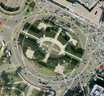
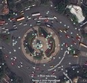
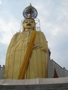
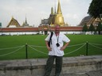
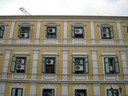

Resor · 2010-10-07 @ 13:28:13 Allmänt Permalink
Grand Palace
6 personer i rummet här på NapPark.
Jag, 2 spanska killar, 2 tjejer från NZ, Mark o jag.
De fyra förstnämnda är 20+ nåt. Är ute 24 timmar i stöten. Och gör vad de nu gör. Mark är kul! Han är från Sydafrika och trodde han var äldst av alla omkring, men jag spöade honom där med några år! Han kommer närmast från Indien och Nepal. Vi pratar ”vuxet”, han o jag ☺
(En knodd sa ”Excuse me Mister.” när vi möttes i dörren…)
Vad är ”pratar vuxet”? Det är nån perspektivförändring ändå. Det där att lämna familj o barn, tryggt liv, prylar jobb för äventyret, till skillnad från sabbatsår, extraknäckat 6 månader och åka iväg. Vi kan inte riktigt sätta fingret på vad det är. Vi letar inte after ”Partyt”, i synnerhet inte vid fullmåne på en strand. Skyltar om billig sprit lockar inte in mig, inte heller stroblampor och bas-pumpande hög musik.
Eller letar vi? Letar nån? Finns det vi och dom? Kanske är vi alla bara på äventyr, fast med nyansskillnader. Fullmoon party, grillspett på en bakgata, bygga till garaget, gå en salsakurs?
2.07 Får vi viss klarhet. Ena tjejen och ett främmande par bär in sin pissfulla kompis och dumpar henne i sängen efter att ha kört hem henne i skottkärra. Sen börjar fylletjafset, om nån hade kysst killen, var de ska sova, vi går, vi stannar, var är mina pengar bla bla med hög röst.
Tyvärr låter det som hon blivit drogad, bara okontaktbar plötsligt mellan drinkarna.
Hon tillbringar hela dagen efter utslagen i sängen, och de som skulle till Koh Samui i dag.
---
Dagens projekt är Grand Palace.
”Rama I byggde Bangkok”, han hade väl lite hjälp antar jag.
Det börjar med random frukost vid vägkanten, en kall soppa med något som kanske är bovete, kanske ris… med något som kan vara yogurt. Gott!!
Mer trafikfrågor. sexfiliga cirkulationsplatser. Fast ordning o reda! Filer och signaler. Inte som i Paris (Porte maillot), 100 bilar snurrade runt utan filer och ut/infarter lite här och där. Det var läskigt att köra bil där! Vänster bild Paris, racerbana! Höger bild, Bangkok, filkörning.
Sitter på buss 82 mot Grand Palace. Här är vi outsiders, lite udda och konstiga. Kan inte språket, vet inte hur man beter sig. Jag vet fortfarande inte hur och om jag borde betala på bussen. Jag bleka stora människa i avvikande kläder.
Vid GP, där kungarna bodde förr, till nuvarande kungens bror dog där på 40 talet, möter jag en entrévakt i fin uniform som tyvärr meddelar att det är stängt nu, och jag behöver långbyxor. Byxor går att låna, men gör en tur och titta på andra saker först! Andra tempel. En Tuk Tuk till tre platser 50 THB. Låter ju bra och jag åker iväg.
Jag undrar om det är meningen att man inte ska se var man är, för det gör man inte. Annars kunde de väl ha plasttak. Framme vid ”standing Buddha” känns det bra och Buddhan är stor.
Sen gåååår jag tillbaka till GP. Funderar på om jag orkar se mer guld och mosaik, men man ”ska” se GP. Och minsann, de stänger om 15 minuter. Nej, det var inte stängt förut, lilla grisvakten lurade ut mig på tuk tuk-resa bara!
Hugger en guide och betalar inträde, förmodligen för dyrt men va tusan. Totalt 750 THB. Nu vill jag inte se mer sånt. Möjligen följa med på en ceremoni, och få veta mer om folkets relation till sin religion.
Redwood parkett för 120kr/kvm i en affär. Hm. Vad blir det för 1000kvm från fabriken+frakt+moms? Får vi ens importera träslaget?
Åker buss några kvarter, bredvid mig sitter en liten dam med en påse bröd. De ser goda ut. Det är ju så mysigt det där med att komma hem med färskt gott bröd. Lite lycka. Men brödet tar slut. Vi behöver återskapa lyckan hela tiden, som kärlek kanske. Allt vackert och värdefullt behöver vård och bränsle. Det ska njutas i stunden, som ett mandala. Man ska inte tro att brödet finns där hela veckan, eller ta lyckan för given.
Nu ska jag ut och äta ☺
Jag, 2 spanska killar, 2 tjejer från NZ, Mark o jag.
De fyra förstnämnda är 20+ nåt. Är ute 24 timmar i stöten. Och gör vad de nu gör. Mark är kul! Han är från Sydafrika och trodde han var äldst av alla omkring, men jag spöade honom där med några år! Han kommer närmast från Indien och Nepal. Vi pratar ”vuxet”, han o jag ☺
(En knodd sa ”Excuse me Mister.” när vi möttes i dörren…)
Vad är ”pratar vuxet”? Det är nån perspektivförändring ändå. Det där att lämna familj o barn, tryggt liv, prylar jobb för äventyret, till skillnad från sabbatsår, extraknäckat 6 månader och åka iväg. Vi kan inte riktigt sätta fingret på vad det är. Vi letar inte after ”Partyt”, i synnerhet inte vid fullmåne på en strand. Skyltar om billig sprit lockar inte in mig, inte heller stroblampor och bas-pumpande hög musik.
Eller letar vi? Letar nån? Finns det vi och dom? Kanske är vi alla bara på äventyr, fast med nyansskillnader. Fullmoon party, grillspett på en bakgata, bygga till garaget, gå en salsakurs?
2.07 Får vi viss klarhet. Ena tjejen och ett främmande par bär in sin pissfulla kompis och dumpar henne i sängen efter att ha kört hem henne i skottkärra. Sen börjar fylletjafset, om nån hade kysst killen, var de ska sova, vi går, vi stannar, var är mina pengar bla bla med hög röst.
Tyvärr låter det som hon blivit drogad, bara okontaktbar plötsligt mellan drinkarna.
Hon tillbringar hela dagen efter utslagen i sängen, och de som skulle till Koh Samui i dag.
---
Dagens projekt är Grand Palace.
”Rama I byggde Bangkok”, han hade väl lite hjälp antar jag.
Det börjar med random frukost vid vägkanten, en kall soppa med något som kanske är bovete, kanske ris… med något som kan vara yogurt. Gott!!
Mer trafikfrågor. sexfiliga cirkulationsplatser. Fast ordning o reda! Filer och signaler. Inte som i Paris (Porte maillot), 100 bilar snurrade runt utan filer och ut/infarter lite här och där. Det var läskigt att köra bil där! Vänster bild Paris, racerbana! Höger bild, Bangkok, filkörning.




Sitter på buss 82 mot Grand Palace. Här är vi outsiders, lite udda och konstiga. Kan inte språket, vet inte hur man beter sig. Jag vet fortfarande inte hur och om jag borde betala på bussen. Jag bleka stora människa i avvikande kläder.
Vid GP, där kungarna bodde förr, till nuvarande kungens bror dog där på 40 talet, möter jag en entrévakt i fin uniform som tyvärr meddelar att det är stängt nu, och jag behöver långbyxor. Byxor går att låna, men gör en tur och titta på andra saker först! Andra tempel. En Tuk Tuk till tre platser 50 THB. Låter ju bra och jag åker iväg.
Jag undrar om det är meningen att man inte ska se var man är, för det gör man inte. Annars kunde de väl ha plasttak. Framme vid ”standing Buddha” känns det bra och Buddhan är stor.


Vidare till turistinformationen enligt den karta jag fick av vakten och hans kompis i Tuk Tuken. Stop, han öppnar dörren och jag går in i en…. Herrekipering! Så pass! ”Jag vill ha lite turistinformation” säger jag och expediten lovar att informera. Men inte får jag en engelskspråkig guide till Bangkok. Jag går tillbaka till min Tuk Tuk och säger turistinformation. Vi kommer till TAT, men det är mer en resebyrå och bokningsagentur. Inga broschyrer eller tips på vad man kan göra idag… Gå och shoppa säger han till mig. Shoppa? Jo jag vet att folk gör det men jag gillar inte shopping som sysselsättning i sig. Dessutom har jag redan övervikt, och för mycket packning också. Nu är han sur, kör mig till ett tempel och lämnar mig där. Gold Mount. Fint.Sen gåååår jag tillbaka till GP. Funderar på om jag orkar se mer guld och mosaik, men man ”ska” se GP. Och minsann, de stänger om 15 minuter. Nej, det var inte stängt förut, lilla grisvakten lurade ut mig på tuk tuk-resa bara!


Hugger en guide och betalar inträde, förmodligen för dyrt men va tusan. Totalt 750 THB. Nu vill jag inte se mer sånt. Möjligen följa med på en ceremoni, och få veta mer om folkets relation till sin religion.


Går hemåt, vid en flodbank bor en familj på plankor vid dyn. Två barn dansar till musik i radion. Kontraster. Och central kyla i husen kanske nåt vi kan hjälpa till med? Det här ser lite tokigt ut.Redwood parkett för 120kr/kvm i en affär. Hm. Vad blir det för 1000kvm från fabriken+frakt+moms? Får vi ens importera träslaget?
Åker buss några kvarter, bredvid mig sitter en liten dam med en påse bröd. De ser goda ut. Det är ju så mysigt det där med att komma hem med färskt gott bröd. Lite lycka. Men brödet tar slut. Vi behöver återskapa lyckan hela tiden, som kärlek kanske. Allt vackert och värdefullt behöver vård och bränsle. Det ska njutas i stunden, som ett mandala. Man ska inte tro att brödet finns där hela veckan, eller ta lyckan för given.
Nu ska jag ut och äta ☺